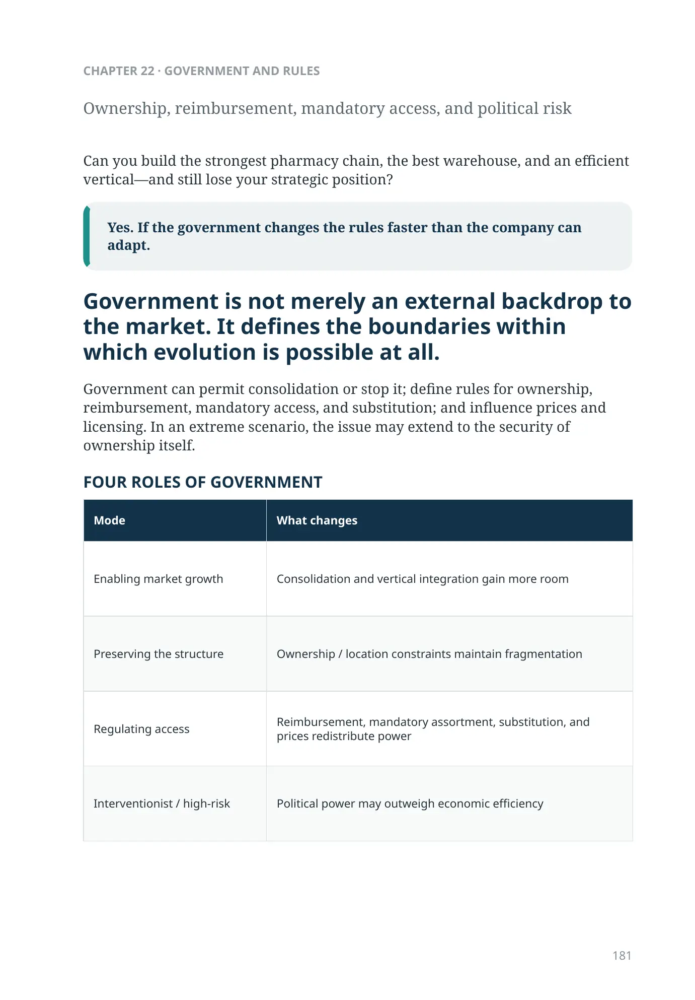
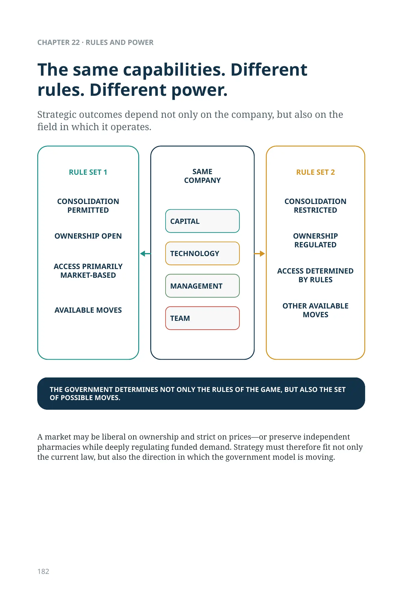
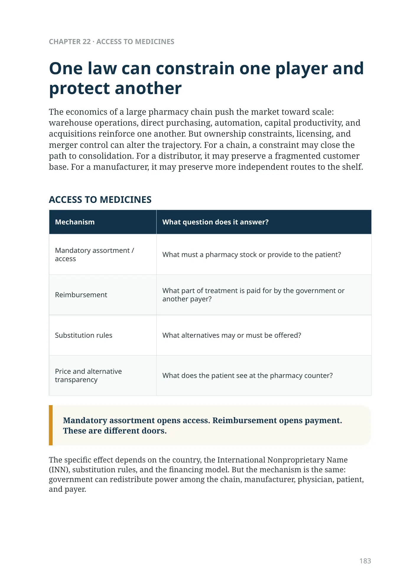
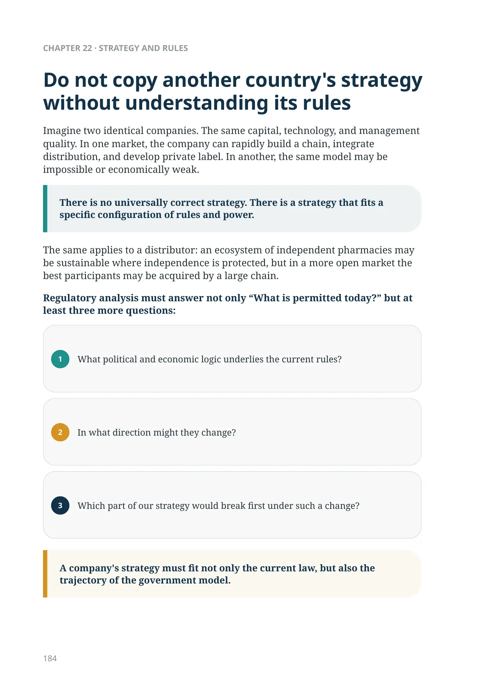
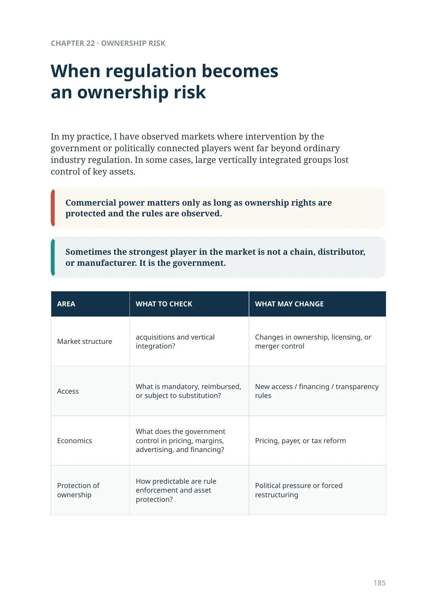
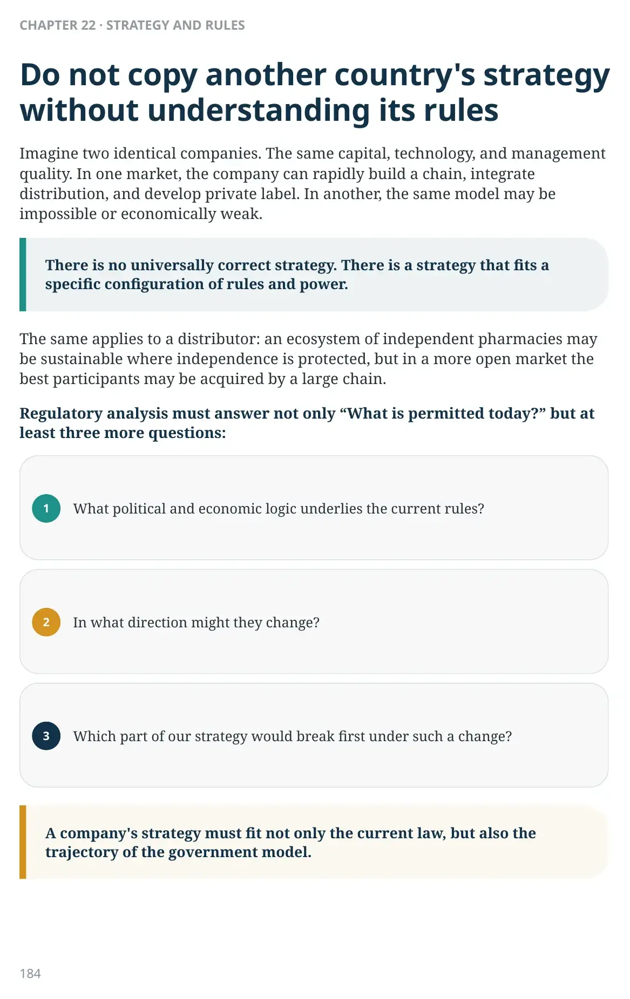

Government Changes the Game
Automated dispensing: technology and law move at different speeds
Electronic identification, ePrescription, eligibility verification, automated storage, and secure dispensing can technically be connected into one process. But the right to dispense a particular category of medicines automatically, requirements for pharmacist presence, and the consultation procedure are determined by national regulation.
Technical feasibility is not legal authorization.
Ownership, reimbursement, mandatory access, and political risk
Can you build the strongest pharmacy chain, the best warehouse, and an efficient vertical—and still lose your strategic position?
Yes. If the government changes the rules faster than the company can adapt.
Government is not merely an external backdrop to the market. It defines the boundaries within which evolution is possible at all.
Government can permit consolidation or stop it; define rules for ownership, reimbursement, mandatory access, and substitution; and influence prices and licensing. In an extreme scenario, the issue may extend to the security of ownership itself.
FOUR ROLES OF GOVERNMENT
| Mode | What changes |
|---|---|
| Enabling market growth | Consolidation and vertical integration gain more room |
| Preserving the structure | Ownership / location constraints maintain fragmentation |
| Regulating access | Reimbursement, mandatory assortment, substitution, and prices redistribute power |
| Interventionist / high-risk | Political power may outweigh economic efficiency |
A market may be liberal on ownership and strict on prices—or preserve independent pharmacies while deeply regulating funded demand. Strategy must therefore fit not only the current law, but also the direction in which the government model is moving.
The same capabilities. Different rules. Different power.
Strategic outcomes depend not only on the company, but also on the field in which it operates.
- Consolidation permitted
- Ownership open
- Access primarily market-based
- Available moves
- Capital
- Technology
- Management
- Team
- Consolidation restricted
- Ownership regulated
- Access determined by rules
- Other available moves
THE GOVERNMENT DETERMINES NOT ONLY THE RULES OF THE GAME, BUT ALSO THE SET OF POSSIBLE MOVES.
One law can constrain one player and protect another
The economics of a large pharmacy chain push the market toward scale: warehouse operations, direct purchasing, automation, capital productivity, and acquisitions reinforce one another. But ownership constraints, licensing, and merger control can alter the trajectory. For a chain, a constraint may close the path to consolidation. For a distributor, it may preserve a fragmented customer base. For a manufacturer, it may preserve more independent routes to the shelf.
ACCESS TO MEDICINES
| Mechanism | What question does it answer? |
|---|---|
| Mandatory assortment / access | What must a pharmacy stock or provide to the patient? |
| Reimbursement | What part of treatment is paid for by the government or another payer? |
| Substitution rules | What alternatives may or must be offered? |
| Price and alternative transparency | What does the patient see at the pharmacy counter? |
Mandatory assortment opens access. Reimbursement opens payment. These are different doors.
The specific effect depends on the country, the International Nonproprietary Name (INN), substitution rules, and the financing model. But the mechanism is the same: government can redistribute power among the chain, manufacturer, physician, patient, and payer.

Do not copy another country's strategywithout understanding its rules
Imagine two identical companies. The same capital, technology, and management quality. In one market, the company can rapidly build a chain, integrate distribution, and develop private label. In another, the same model may be impossible or economically weak.
There is no universally correct strategy. There is a strategy that fits a specific configuration of rules and power.
The same applies to a distributor: an ecosystem of independent pharmacies may be sustainable where independence is protected, but in a more open market the best participants may be acquired by a large chain.Regulatory analysis must answer not only “What is permitted today?” but at least three more questions:
| 1 | What political and economic logic underlies the current rules? |
|---|---|
| 2 | In what direction might they change? |
| 3 | Which part of our strategy would break first under such a change? |
A company's strategy must fit not only the current law, but also the trajectory of the government model.
When regulation becomes an ownership risk
In my practice, I have observed markets where intervention by the government or politically connected players went far beyond ordinary industry regulation. In some cases, large vertically integrated groups lost control of key assets.
Commercial power matters only as long as ownership rights are protected and the rules are observed.
Sometimes the strongest player in the market is not a chain, distributor, or manufacturer. It is the government.
| AREA | WHAT TO CHECK | WHAT MAY CHANGE |
|---|---|---|
| Market structure | acquisitions and vertical integration? | Changes in ownership, licensing, or merger control |
| Access | What is mandatory, reimbursed, or subject to substitution? | New access / financing / transparency rules |
| Economics | What does the government control in pricing, margins, advertising, and financing? | Pricing, payer, or tax reform |
| Protection of ownership | How predictable are rule enforcement and asset protection? | Political pressure or forced restructuring |